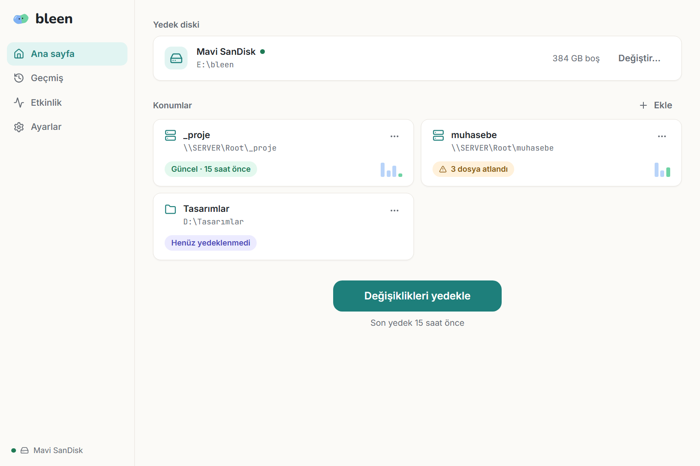

Ofis verileriniz için doğrulanmış yedekleme.
bleen, klasörlerinizi ve sunucu paylaşımlarınızı taşınabilir diskte tarihli, şifreli ve her dosyası kontrol edilmiş yedeklere dönüştürür. İstediğiniz günün verisine dakikalar içinde dönersiniz.
Şu anda seçili ofislerle birlikte test ediyoruz. İndirme bağlantısı yalnızca beta katılımcılarına gönderilir.

Ekim 2026 iç testleri: 64 GB ve 229 GB'lık iki ofis simülasyonu, 75 iş günü, 10 geri yükleme ve ZIP dışa aktarma; her dosya SHA-256 ile karşılaştırıldı.
Yedeğin varlığını değil, işe yaradığını bilin.
Bir yedekleme çözümünün değeri, geri yükleme anında belli olur. bleen her adımı buna göre tasarlar.
Her gün, tarihli bir kopya
İlk yedek tam alınır, sonrakiler yalnızca değişenleri kaydeder. Geçmiş ekranından istediğiniz günü seçip geri dönersiniz.
Her dosya kontrol edilir
Yazılan her arşiv diskten geri okunur; geri yüklenen her dosya SHA-256 özetiyle karşılaştırılır. Sorun varsa sessiz kalmaz, söyler.
Uçtan uca şifreleme
İsterseniz yedek diski parolayla şifrelenir. Disk kaybolsa ya da çalınsa bile içerik okunamaz.
Sunucu ve ağ klasörleri
Bilgisayarınızdaki klasörleri ya da ofis sunucusundaki paylaşımları (\\SUNUCU\Muhasebe) aynı kolaylıkla yedekleyin.
Açık, standart biçim
Yedekler standart ZIP dosyalarıdır. bleen olmadan bile, her bilgisayarda açılabilir. Verileriniz hiçbir zaman bir programa kilitlenmez.
Geri yükleme her zaman açık
Tek bir dosyayı, bir klasörü ya da bir günün tamamını geri yükleyin veya tek ZIP olarak alın. Lisans sona erse bile geri yükleme hiçbir zaman engellenmez.
Üç adım. Teknik bilgi gerekmez.
Diski takın, klasörleri seçin
Harici disk ve yedeklenecek klasörler bir kez seçilir. Ağ paylaşımları da eklenebilir.
Tek tıkla yedekleyin
bleen değişen dosyaları bulur, arşivler ve doğrular. İsterseniz her gün belirlediğiniz saatte kendiliğinden çalışır.
İstediğiniz güne dönün
Geçmişten bir gün seçin; dosyaları geri yükleyin ya da o günü tek bir ZIP olarak kaydedin.
Verileriniz sizde kalır.
bleen bir bulut hesabı istemez ve verilerinizi hiçbir yere göndermez. Yedekler, sizin elinizdeki diskte durur.
- İnternet gerekmezYedekleme, geri yükleme ve lisans tamamen bilgisayarınızda çalışır.
- Fidye yazılımına karşı uyarıDosyaların çok büyük bir kısmı birden değişirse bleen yedeği durdurup sorar; sağlam eski yedekleriniz korunur.
- Kontrol edilebilir yedekler"Yedekleri kontrol et" diskteki her arşivi yeniden okuyup doğrular; eskiyen disklerdeki sorunlar erkenden görünür.
- Elle çalışma ilkesiArka planda sürekli çalışan bir hizmet yok. bleen yalnızca siz istediğinizde ya da sizin açtığınız zamanlamada çalışır.
Neredeyiz, sırada ne var?
Kapalı beta boyunca katılımcılardan gelen geri bildirimler önceliklerimizi belirliyor.
Kapalı beta
- Taşınabilir diske doğrulanmış yedek
- Geçmiş, geri yükleme ve ZIP
- Şifreleme ve ağ klasörleri
- Windows 7'den 11'e
Günlük kullanım
- Açık dosyaların yedeği (Outlook, veritabanları)
- Otomatik güncelleme bildirimi
- Yedek hatırlatıcısı ve e-posta raporu
- macOS sürümü
Bulut kopyası
- Kendi Google Drive / OneDrive hesabınıza şifreli kopya
- Yönetilen bleen Bulut
- Buluttan geri yükleme
Kurumsal
- Sistem imajı (tüm disk)
- Çok ofisli yönetim paneli
- SQL Server yedeği
Ofisinizde denemek ister misiniz?
bleen şu anda kapalı betada. Düzenli yedeğe ihtiyacı olan ve deneyimini bizimle paylaşmaya hazır ofislerle çalışıyoruz.
- Ofisinizden ve yedeklemek istediğiniz veriden kısaca bahsedin.
- Uygun olursa kurulum için sizinle iletişime geçelim.
- Beta sürümü ve kurulum desteği doğrudan size gönderilir.
Sık sorulan sorular
bleen ne zaman herkese açık olacak?
Kapalı beta tamamlandığında. Tarih netleştiğinde burada duyuracağız; beta katılımcıları önceden haberdar olur.
Hangi sistemlerde çalışıyor?
Windows 11, 10, 8.1 ve 7. macOS ve Linux sürümleri hazırlanıyor.
Verilerim nerede duruyor?
Sizin taşınabilir diskinizde ya da ağdaki bir klasörde. bleen verilerinizi hiçbir yere göndermez. Planlanan bulut kopyası isteğe bağlı olacak ve şifreli gidecek.
Yedeği bleen olmadan açabilir miyim?
Evet. Yedekler standart ZIP dosyalarıdır; şifreli değilse her bilgisayarda açılır. Verileriniz hiçbir zaman bir programa bağlı kalmaz.
Ücretli mi olacak?
Evet, bleen bilgisayar başına lisanslanan bir yazılım olacak ve ücretsiz bir deneme süresi sunacak. Fiyatlar genel çıkışta duyurulacak. Lisans ne olursa olsun yedeklerinizi geri yüklemek her zaman mümkündür.